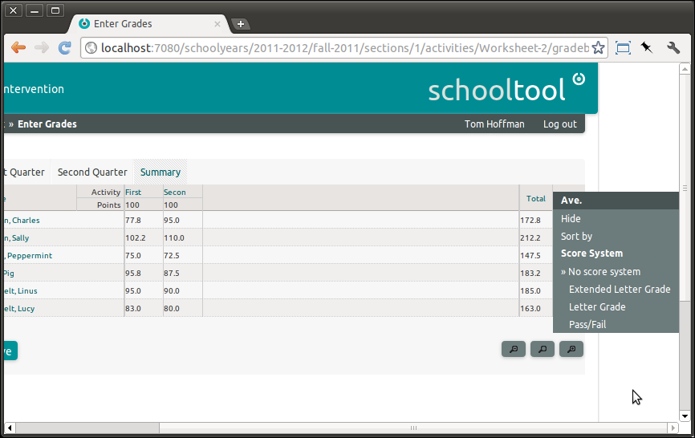
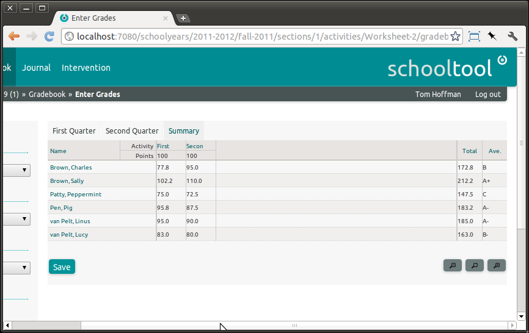
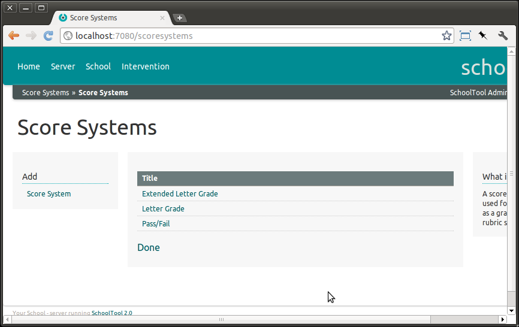
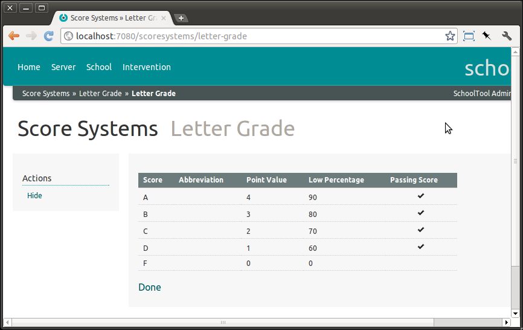
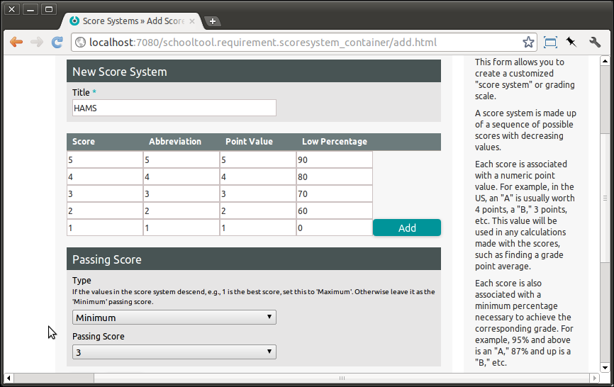
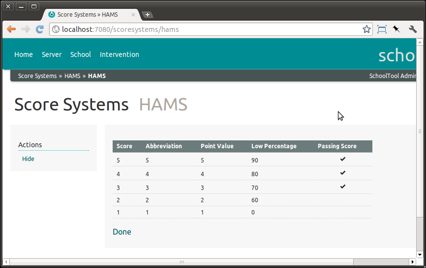

Score Systems¶
Displaying Score Systems in the Gradebook¶
Scores are converted to grades using what SchoolTool calls “Score Systems.”
A score system is a sequence of scores in descending value. Each score has a label, a numeric value used to calculate grade averages when that is relevant, and a low cutoff for percentage values associated with this score. The cutoff is used to automatically assign a score to a given percentage value.
SchoolTool ships with a few default score systems. The site manager can add new score systems and hide the existing ones.
If you click on the Ave. column header, you can see the current score systems installed:

If you select a score system in this menu, it will display the average converted to a grade based on the score system. For example, with the default “Extended Letter Grade:”

Managing Score Systems¶
The site manager can add new score systems and hide the existing ones.. As “manager,” go to School then Customize: Score Systems:

If you click on the title of a score system, you’ll see a detailed view:

If you would like to hide a score system (you can’t delete them completely to keep older data using them consistent) click Actions: Hide. This will keep users from adding them in the future, but retain their current use.
To create a new score system, press Add: Score System from the main score system page. In this case, I’m creating a score system that uses numbers as labels instead of the more traditional letters:

Start with the highest score and click Add in the table until you get to a score that has a low percentage of 0 percent.
Please note that if neither the point value or minimum percentage score is relevant for your grading system, you still need to add some values there, even if they aren’t used in subsequent calculations or reporting.
Hit Save when you are done.
